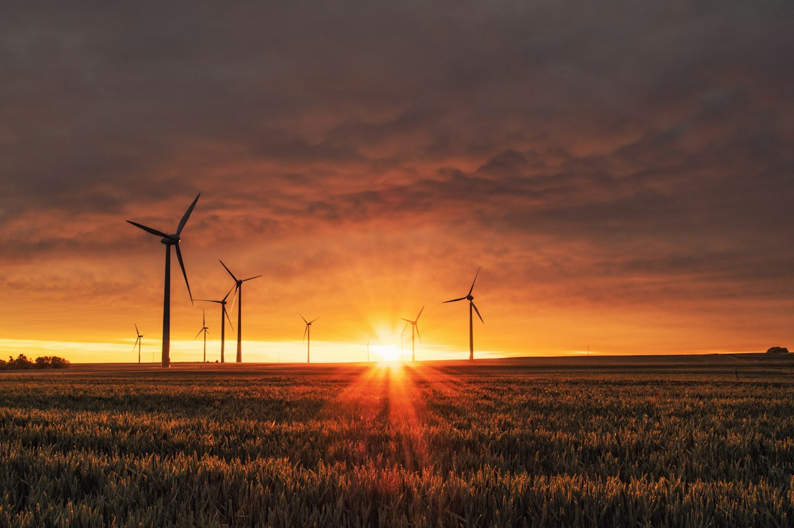

Combustíveis fósseis
A queima de carvão, petróleo e gás para gerar eletricidade, movimentar transportes e produzir bens libera dióxido de carbono. É uma das principais fontes de emissões que impulsionam o aquecimento global.

O efeito estufa natural mantém a Terra habitável. O problema é sua intensificação pelo aumento rápido de gases que retêm calor na atmosfera, principalmente devido a atividades humanas.

A queima de carvão, petróleo e gás para gerar eletricidade, movimentar transportes e produzir bens libera dióxido de carbono. É uma das principais fontes de emissões que impulsionam o aquecimento global.
Quando florestas são derrubadas ou queimadas, parte do carbono armazenado é liberada e diminui a capacidade de retirar dióxido de carbono do ar. A mudança no uso da terra também fragmenta habitats.
Algumas atividades agropecuárias liberam metano e óxido nitroso, enquanto processos industriais e o consumo de energia também geram emissões. Produzir e desperdiçar mais do que o necessário amplia a pressão sobre o clima.
O aquecimento reduz áreas de neve e gelo que refletem a luz solar. Com menos superfície clara, mais energia é absorvida pelo oceano e pelo solo, o que pode intensificar o aquecimento regional nos polos.
O IPCC concluiu que a influência humana causou o aquecimento observado e que as emissões vêm principalmente da energia, do transporte, da indústria e das mudanças no uso da terra. Por isso, enfrentar as causas exige mudanças em sistemas de produção e também em políticas públicas, não apenas escolhas individuais.